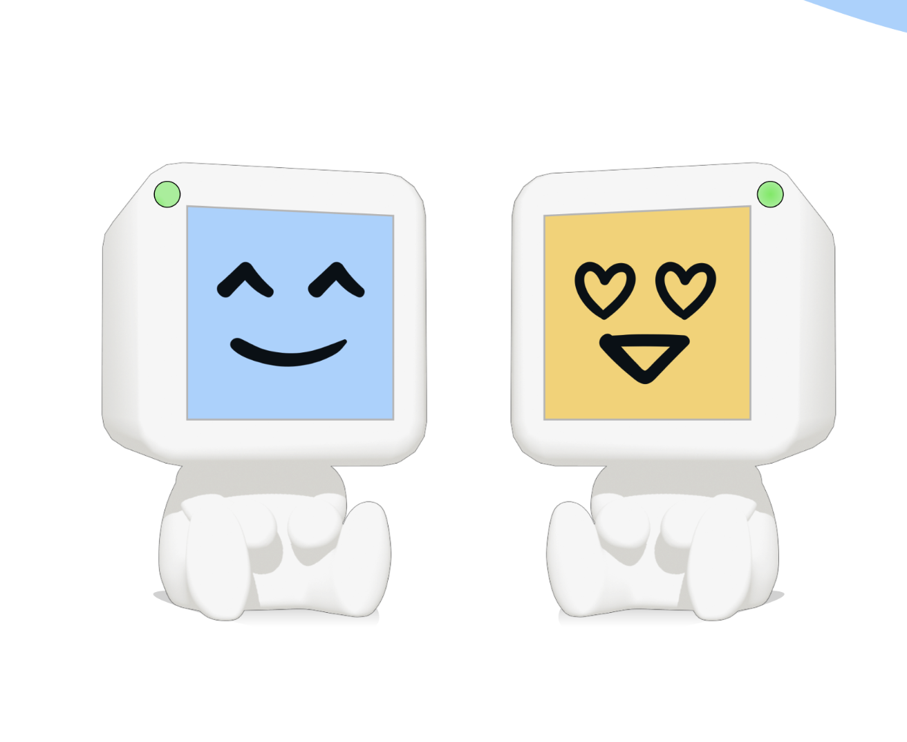
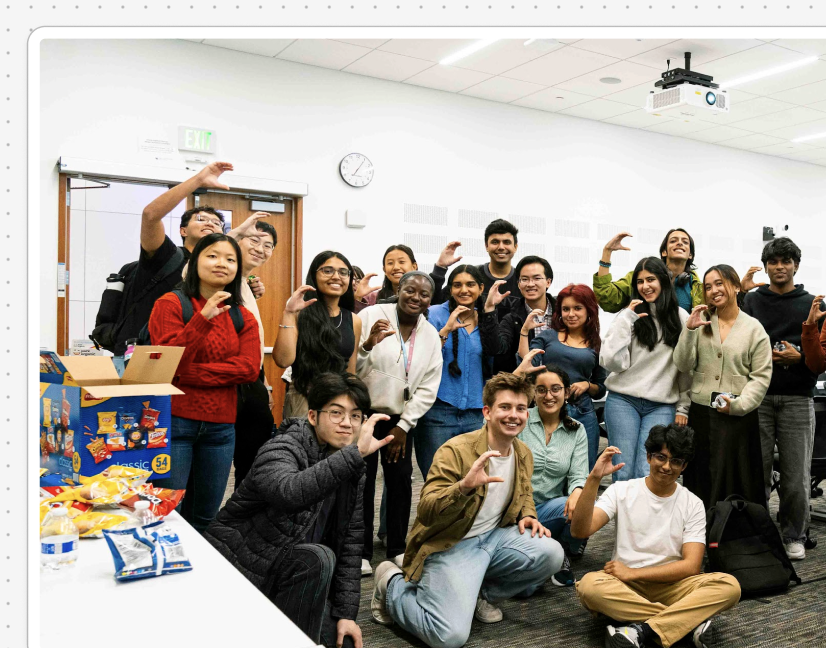

2021


2022


2025
- attempting to be the first Design Partner for all companies at YC or 1517 Fund, working at the forefront of sci-fi, deeptech, and multimodal AI systems.
- internet.dev, Daybreak Studio, HEX, PlaySF, Basement Studio, Parabolic, FromScratch — to gain rapid design exposure across new environments.
- Notion, Vercept, SHV, Apple, Nothing.so, Meteor, Cognito, Flora, Perplexity, Anthropic.
- design inspired by nature, dev tools for flow states, new design/animation libraries, childhood learning devices, RLHF design, diabetic wearables, modular homes, gratitude tools, and more.